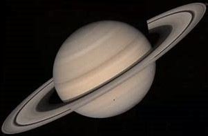
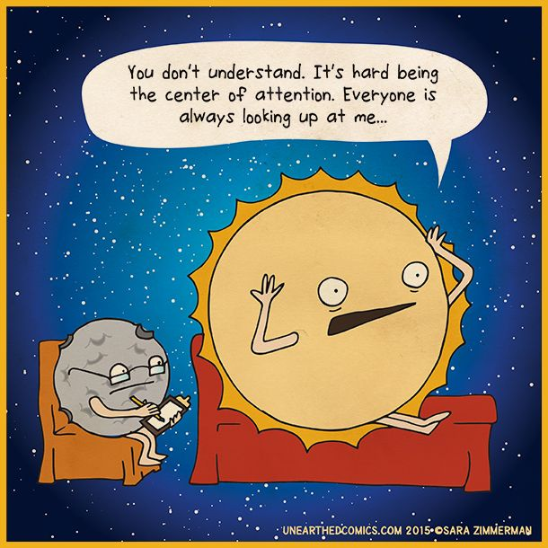
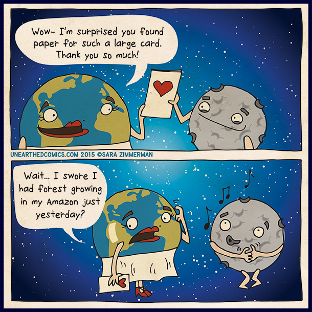

Facts and Information About the Solar System
When we talk about the Solar System, we realise that we are nothing but a speck of dust in the universe. Do
you look up in the night sky and wonder what is out there? If you do, then you are probably interested in
knowing all that you can about the Solar System. The sun, the planets, and countless smaller bodies
fascinate us. If you want to know more about them, read on.
What is the Solar System?
Our solar system is made up of the sun, the eight planets that orbit the sun, and the countless smaller
bodies such as asteroids, comets, and dwarf planets. The sun which lights up everything is actually a star
and everything orbiting it is is bound by gravity. There are eight planets that orbit the sun namely,
Mercury, Venus, Earth, Mars, Jupiter, Saturn, Uranus, and Neptune. Pluto which was the ninth planet has now
been classified as a dwarf planet along with other dwarf planets like Eris, Ceres, Makemake, and Haumea.
Facts About the Solar System for Children
Here are some interesting facts about the solar system that you children should know.
1. The sun is far away from the Earth.
The distance between the sun and the Earth is about 150 million kilometres. The light from the sun
travelling at a speed of 300,000 Km takes about 8 minutes to reach us. To help your kids understand better,
here is an example they would like – If you decide to drive to the sun by your car at a speed of 100km/hr,
it would take you a little over 171 years to get to the sun.
2. Years ago, people thought that Earth was the centre of the universe.
For thousands of years, people believed that the Earth was the centre of the universe and that the sun,
planets, and stars orbited the Earth. But astronomers like Galileo and Copernicus showed otherwise by
developing a model that explained the movement of the planets around the sun.
3. Most of the Solar System’s mass is contained in the sun.
The Sun contains 99.86% of the mass of the solar system, followed by the planets Jupiter and Saturn. The
rest of the planets and asteroids make up a very small percentage of the Solar System’s Mass.
4. The inner planets are composed of rocks and metals.
The four inner planets—Mercury, Venus, Earth and Mars—are smaller and are mainly composed of rocky matter
and metals. They are also called terrestrial planets.
5. The outer planets are composed of gases.
The outer planets of the Solar System—Jupiter, Saturn, Uranus and Neptune—are mostly made up of gases such
as hydrogen and helium. These planets are also called ‘gas giants’.
6. Jupiter is the largest planet in our Solar System.
Jupiter, the gas giant, has a diameter of 142,984 km. It has dozens of moons and a Giant Red Spot, which is
a planetary storm that runs across it.
7. Saturn’s rings are beautiful.
Although Saturn’s rings are can be seen through telescopes. The rings are around 30 ft in thickness.
However, some parts are several kilometres thick and are mostly made of dusty ice and debris.
8. The sun is a hot ball of gas.
The sun is a massive ball of hot and dense gases, mainly hydrogen and helium. It has a surface temperature
of 5,500 degrees Celsius. It is about 5 billion years old and is expected to last 5 more billion years.
9. Venus is the hottest planet in our Solar System.
Although Mercury is closest to the sun, the presence of thick carbon dioxide makes Venus the hottest planet
in the solar system. The average surface temperature of Venus is 477°C.
10. The asteroid belt is made up of rocks.
The asteroid belt consists of millions of rocks ranging from the size of a small grain to rocks hundreds of
kilometres wide.The solar system is fascinating. When you read more about it you want to know even more. We hope you liked this information about the Solar System.
Mercury
Mercury is named after the Roman god of commerce, travel, and thievery. In Greek mythology, Mercury was
known as Hermes, the messenger of the gods. It probably received this name because it moves very quickly
across the sky.
Key Facts & Summary
- Mercury is the closest planet to the Sun at a distance of 57 million kilometers / 35 million miles.
- Out of all the terrestrial planets, Mercury is the smallest. It is also the smallest planet in the Solar System.
- Despite being so small, Mercury is the second-densest planet in the Solar System after Earth. This means it is very compact.
- Mercury does not have any satellites or ring systems.
- The surface of Mercury is similar to the Moon. It is the most heavily cratered planet and this means that it hasn’t been geologically active for many years.
- Mercury has a radius of 2.439 km / 1.516 mi and a diameter of 4.879 km / 3.032 mi.
- Though it is the closest planet to the Sun, temperatures on Mercury are both hot and cold.
- During the day, Mercury’s average surface temperatures can reach up to 800 degrees Fahrenheit / 430 degrees Celsius.
- At night, Mercury’s surface temperatures can drop to as low as -290 degrees Fahrenheit / -180 degrees Celsius.
- Mercury’s changes in temperature are the most drastic in the Solar System.
- Mercury formed around 4.5 billion years ago after gravity pulled swirling gases and dust together.
- After Mercury was formed, scientists believe that it suffered heavy bombardments by comets and asteroids shortly after. Another event called the Late Heavy Bombardment which ended around 3.8 billion years ago, may also be responsible for Mercury’s cratered surface.
- Almost 85% of Mercury’s radius is represented by its enormous iron core.
- Due to the core’s unusual size, Mercury began to shrink as the core cooled and contracted pulling the surface inward.
Mercury is the smallest planet in the Solar System and the closest planet to the Sun. Though it is very close to the Sun, it is not the hottest planet, that title belongs to Venus, but Mercury is the second-hottest nonetheless.
Mercury is slightly bigger than Earth’s Moon, and it is also very similar in appearance to our Moon. Mercury itself doesn’t have any moons. The planet can be seen without binoculars or telescopes, but since it is so near to the Sun, it may be hard to see in the early evening skies.
Surface and structure
Mercury is covered with craters from various impacts. One of the largest is called the Caloris Basin, and it
is 1.300 kilometers / 807 miles across.Since its surface is similar to our Moon, it indicates that the small planet hasn’t been geologically active for many years. The planet is primarily made out of rocks.
Though it is very hot on Mercury, frozen water exists on its surface. Some of the deep craters present at the poles are never exposed to direct sunlight, and temperatures remain very low there.
Venus
The planet Venus is named after the ancient Roman goddess of love and beauty. In Greek mythology, she is
known as Aphrodite. The planet was named after this goddess because, for the ancient people, it shinned the
brightest.
Key Facts & Summary
- Venus is the second planet from the Sun, and the sixth-largest planet in the Solar System.
- Venus and Mercury are the only planets in the Solar System that do not have a moon.
- Venus is the second brightest object in the sky after the Moon, and the Sun.
- It is the only planet named after a female deity and the brightest planet in the Solar System
- Venus is 62 degrees hotter than Mercury, the closest planet to the Sun.
- Venus has a radius of 6.051 kilometers / 3.760 miles, and a diameter of 12.104 km / 7.521 mi. It is only slightly smaller than Earth.
- Venus is at a distance of 108 million km / 68 million mi away from the Sun.
- One day on Venus lasts for about 243 Earth days. This is the slowest rotation of any planet making it the most spherical object in the Solar System, after the Sun.
- Venus and Uranus rotate in the opposite direction than the other planets. They both move from East to West, clockwise.
- Venus has montains, valleys, and tens of thousands of volcanoes. The highest mountain on Venus, Maxwell Montes, is 20,000 feet / 8.8 kilometers high – very similar to the highest mountain on Earth, Everest.
- Apart from lacking any moons, Venus also doesn’t have a ring system, and because it rotates very slowly, its magnetosphere is also very weak.
- The average temperatures on Venus have been estimated to be at around 465 degrees Celsius / 900 degrees Fahrenheit, this is hot enough to melt lead.
In our Solar System, the planet closest to the Sun is Mercury. But even though it is the nearest, it isn’t the hottest planet. Venus is actually the hottest planet out of all the planets in the Solar System.
But how can this be? Well, Venus has gases and clouds of sulfuric acid that traps the heat and keeps Venus toasty warm. It is so hot on Venus, that even metals would melt and become liquid.
Surface and structure
Venus is a little smaller than Earth, but like our planet, it has mountains, volcanoes, and few craters that
indicate a relatively young surface. Both worlds also have similar densities and chemical compositions.Venus is sometimes referred to as Earth’s sister since scientists believe that it once had large amounts of water; however, it boiled away due to high temperatures.
This might have also happened to our planet if it was closer to the Sun. Venus is quite special since it spins in the opposite direction of most other planets, including Earth.
One of the largest volcanoes on Venus is Sif Mons. The interesting fact is that Venus has many active volcanoes on its surface to this day.
Earth
Earth is the only planet whose English name does not derive from Greek or Roman mythology. The name of our
planet comes from the Old English and Germanic languages. Many languages throughout the world have their own
names for our planet.
Key Facts and Summary
- Earth is the third planet from the Sun and our home planet.
- Earth revolves around the Sun, but its average distance from it is 149 million kilometers / 93 million miles. In astronomy, this is 1 AU – or an astronomical unit.
- Scientists have researched and estimated that our Earth is around 4.5 billion years old.
- Earth formed at around the same time as the rest of our Solar System.
- Earth revolves around the Sun once every 365.25 days – this is known as one Earth year.
- In one year, Earth rotates like a spinning ball about 366.25 times – they are known as Earth days.
- Earth is the fifth largest planet of the Solar System. It has a diameter of 6.371 km / 3.958 mi. It is the largest terrestrial planet. The other terrestrial planets are Venus, Mars, and Mercury.
- The name Earth is at least 1.000 years old. It simply translates to “the ground”. The Greek name for Earth was Gaia – Mother Earth. Only 3% of Earth’s water is fresh and 97% of it is salty.
- The surface of Earth is covered by water, around 71%, only 29% of Earth’s surface is covered by land.
- The mixture of gases commonly known as air are nitrogen, oxygen, argon, and carbon dioxide. Without them, we couldn’t live.
- The atmosphere of Earth is divided into 6 layers – the troposphere, stratosphere, mesosphere, thermosphere, exosphere, and ionosphere.
- Earth has the greatest density out of all the planets in our Solar System. This means it is very compact.
- Earth has only one satellite – the Moon, but it also has a couple of temporal artificial satellites.
Studying our Earth both with and without the aid of a spacecraft can help us understand just how life developed here and not someplace else.
It was not until the twentieth century that we had maps of the entire planet. Every picture taken from space of our world is very important since they help in predicting the weather, especially in tracking and predicting hurricanes.
Surface and Structure
The surface of the Earth is very young – this means that the surface changed a lot from when it was first
formed. Erosion and tectonic processes, like earthquakes, for example, destroy, recreate, and reshape most
of Earth’s surface.Earth is currently the only known planet where water can exist in liquid form on the surface. Most of our planet is covered by water, around 71%. The vast oceans keep the temperatures on Earth stable, and this is crucial in the maintaining of life. Water is essential for life, at least the way we know it.
Water is also responsible for most of the erosion and weathering of the Earth’s continents, a process which is unique in our Solar System. Our Earth has four major main layers: an inner core at the center, an outer core enveloping it, the mantle, and the crust.

Mars
Mars is named after the Roman god of war. For the Greeks, Mars was known as Ares. It was named after the god
of war because of its red color.
Key Facts & Summary
- Mars is the fourth planet from the Sun and the second-smallest planet of the Solar System.
- Mars is the most widely searched planet for life, inspiring many works of fiction.
- The first person to observe Mars with the use of a telescope was Galileo Galilei. He observed the Red Planet in 1610.
- Mars is 227.9 million kilometers / 141.6 million miles away from the Sun.
- Light from the Sun reaches Mars in about 13 minutes.
- Mars is around two times smaller than Earth. It has a diameter of 6.779 km / 4.212 mi.
- Mars is around 10 times less massive than Earth.
- Mars is the outermost terrestrial planet, outside Earth’s orbit. It is 50% farther away from the Sun than Earth.
- Mars has two known natural satellites, Phobos and Deimos.
- Phobos is predicted to suffer a collision with Mars in the distant future.
- The atmosphere on Mars is thin, mostly comprised of carbon dioxide, nitrogen, and argon gases.
- The tallest volcano/mountain in the Solar System is located on Mars. It is named Olympus Mons and it seems to have a height of 21 km / 13 mi.
- Mars also has the biggest canyon in the Solar System. It is named Valles Marines. It is 4.000 km / 2.500 mi long and reaches depths of 7 km / 4 mi deep. The Grand Canyon on Earth is only 446 km / 226 mi long, and only 1.6 km / 1 mi deep.
- Mars doesn’t have a magnetic field however some areas are highly magnetized.
- The average temperatures on Mars is -80 degrees Fahrenheit / -60 degrees Celsius.
- Mars represents masculinity and the symbol of the planet is used for the male gender.
Mars is widely known as the Red planet. Its reddish appearance is caused by the presence of rusty iron in the ground. The name of the month March is derived from Mars.
Mars is visible to the naked eye, and as such, you can see it without the use of a telescope or binoculars. The Red planet is very similar to Earth, and scientists are trying to find out if life was present there.
Surface and Structure
In many ways, Mars can be considered Earth’s brother. It has seasons, polar ice caps, volcanoes, canyons,
and weather. There are many signs of ancient floods on the Red Planet, but now water mostly exists in icy
dirt and thin clouds.There is evidence of liquid salty water in the ground, especially on hillsides. This may be great if people will go there in the future, but observations continue.
Mars is the seventh-largest planet of the Solar System and the fourth planet from the Sun. It has the most varied and complex terrain than any of the terrestrial planets, except for Earth.
On Mars’s surface, we have discovered the biggest mountain in the Solar System. It is named Olympus Mons, and it is three times bigger than the largest mountain on Earth, Everest.
Hellas Planitia is a huge crater on Mars created from an ancient impact. It is located on the Red Planet’s southern hemisphere and its over 6 km / 3.7 mi deep and 2.000 km / 1.242 mi across.
Oceans and lakes may have existed on Mars long ago, but it seems that water was only around for a short period. Some believe that water exists underneath Mars’s surface.
There are many differences in Mars’s southern and northern hemispheres. For example, in the southern hemisphere, many ancient cratered highlands are present, similar to the ones on the Moon.
In the northern hemisphere, plains have undergone changes since the planet formed long ago, and this hemisphere is also lower in elevation.
Jupiter
Key Facts and Summary
- Jupiter is the fifth planet from the Sun and the biggest planet of our Solar System. Some consider it a failed star since it is made out of swirling gases and liquids such as 90% hydrogen, and 10% helium – very similar to the Sun.
- Jupiter is the fourth brightest object in the sky and one of the five visible planets ( Mercury, Venus, Mars, Saturn ).
- The envelope of gases – atmosphere – surrounding Jupiter is the largest planetary atmosphere in the Solar System. It makes up almost the entire planet. Basically, it doesn’t have a true surface with its atmosphere reaching altitudes of 5.000 km / 1.864 mi.
- Through the observations of Jupiter, the discovery of the four Galilean moons ended the belief that everything revolved around the Earth.
- Jupiter has a total of 79 confirmed moons. It is second only to Saturn when it comes to the total amount of satellites.
- Jupiter also has 3 ring systems but much smaller than Saturn’s. Though they can be seen only through ultraviolet, Jupiter’s auroras are the brightest in the Solar System.
- Jupiter has a mean radius of 69.911 kilometers / 43.440 miles, a diameter at the equator of around 142.984 km / 88.846 mi, and a diameter at the poles of 133.708 km / 83.082 mi.
- Jupiter’s mass is almost twice of all the Solar System’s planets combined. It is 318 times more massive than Earth.
- Jupiter is on average about 5.2 AU away from the Sun. One AU is equivalent to 150 million km / 93 million mi.
- Jupiter experiences 200 times more asteroid and comet impacts than Earth.
- In a way, Jupiter is the Solar System’s vacuum cleaner, because of its powerful gravity which attracts many of the comets and asteroids to hit it rather than other planets.
Jupiter is the fifth planet from the Sun and the largest planet of the Solar System. It is more than twice as massive as all the other planets combined, being 318 times bigger than Earth.
The planet is very similar to a star, but it never got big enough to start burning. Jupiter has rings surrounding it, but they are very faint and hard to see.
It is the planet with the second-most moons, 79, after Saturn, who has 82. The closest planets to Jupiter are Mars and Saturn. The planet can be seen with the naked eye, you don’t need a telescope or a pair of binoculars to see it.
Surface and Structure
Jupiter is a gas giant, just like Saturn. It is made mostly out of hydrogen and helium. It doesn’t have a
true surface, but it may have a solid core about the size of Earth at its center.Jupiter is covered in swirling cloud stripes and has enormous storms like the Great Red Spot, which has been going on for hundreds of years.
The atmosphere is very thick, and it is made out of ammonia, sulfur, methane, and water vapor. Jupiter’s atmosphere is the largest planetary atmosphere in the Solar System. It makes up almost the entire planet.

Saturn
The planet Saturn is named after the Roman god of agriculture. In Greek mythology, he is known as Cronus,
the father of Zeus (Jupiter). Saturn is the root of the English word “Saturday.
Key Facts & Summary
- Saturn is the sixth planet from the Sun with the largest planetary rings in the Solar System.
- It is the second-largest planet in the Solar System after Jupiter. Saturn has a radius of 58.232 kilometers / 36.183 miles and a diameter of 120.536 km / 74.897 mi.
- The surface area of Saturn is 83 times greater than Earth. Saturn is the King of the Moons, having a total of 82 confirmed moons. There are probably more out there. >
- The largest moon of Saturn is named Triton, and it is the second-largest moon in the Solar System
after Jupiter’s moon Ganymede. Triron is much bigger than even the planet Mercury.
- Periodic storms are present on Saturn and they are large enough to be seen from Earth. They are named White Spots.
- Saturn doesn’t have a solid surface. It is enveloped by swirling gases and liquids the further down you go.
- It is possible that Saturn may have a core, it would be at least twice the size of Earth and it would be comprised out of metals like iron, and nickel.
- The temperature on Saturn’s upper atmosphere is on average at around -175 degrees Celsius / -285 degrees Fahrenheit. This is quite cold for a gas giant at least. However, below its clouds, it gets considerably hotter.
- Saturn is the most oblate planet in the Solar System. Its equatorial diameter is greater than the planet’s polar diameter. If you look at Saturn through a telescope, it would appear flattened.
- Saturn has the lowest density of all the planets. It is lighter than water and if placed on it, the planet would float.
- The low density of Saturn is attributed to its composition. The planet is largely made up of gases such as hydrogen and helium.
- Saturn’s composition together with its atmosphere influences its color, giving it a brownish-yellow appearance.
Saturn is the sixth planet from the Sun and the second-largest planet in the Solar System after Jupiter. Saturn is the king of the moons because it has the most moons out of any planet, 82, and it may have even more.
Though it is the most distant of the visible planets – planets that can be seen without the need of a telescope or binoculars – a striking feature has always been noted, its rings.
Saturn is nicknamed the “Ringed Planet” – it has more than 30 ring systems around it. It isn’t the only planet with rings, but it definitely has the most beautiful and visible ones.
The first person to observe Saturn through a telescope was Galileo Galilei in the 1600s. Galileo wasn’t sure of what he was seeing, and at first thought the planet had handles, and then he believed he observed three planets, when in fact, they were the rings of Saturn
Structure and Composition
The rings of Saturn are made out of chunks of ice and rock. Their exact origin is unknown. These rings are
very bright and are composed of many small particles that circle Saturn at their own speeds.> These objects range in size from a centime to several meters, and some few are kilometer-sized
Saturn itself is mostly a ball of hydrogen and helium, and this is why it is known as a gas giant like Jupiter. Like Jupiter, Saturn has bands/clouds but much fainter, some of the spots in those bands are areas where big storms occur.
Uranus
The planet Uranus is named after the ancient Greek God of the heavens, the earliest supreme god. He was the
father of Cronus / Saturn, which in turn, was the father of Zeus / Jupiter.
Key Facts & Summary
- Uranus is the seventh planet from the Sun, and the third-largest planet in the Solar System It is the biggest of the ice giants.
- Uranus is 2.9 billion kilometers / 1.8 billion miles away from the Sun.
- Uranus has a radius of 25.362 km / 15.759 mi, and a diameter of 51.118 km or 31.763 mi.
- It comparison to Earth’s mass, Uranus has around 14.5 times the mass of Earth. It has the fourth-largest mass in the Solar System.
- It comparison to Earth’s mass, Uranus has around 14.5 times the mass of Earth. It has the fourth-largest mass in the Solar System.
- Uranus has the coldest planetary atmosphere in the Solar System. Temperatures are on average at around -224 degrees Celsius / -371 degrees Fahrenheit.
- Both Uranus and Neptune share similar compositions. Their chemical compositions differ from the other gas giants Jupiter and Saturn. Because of this, Uranus and Neptune are classified as ice giants rather than gas giants, for easier distinction.
- Uranus has a similar atmosphere to Jupiter and Saturn in its primary composition of hydrogen and helium. However, it contains more “ices” such as water, ammonia, methane, and traces of other hydrocarbons.
- Uranus has 13 known rings surrounding it but they are difficult to observe.
- The reason why Uranus is blue is due to the presence of methane. Uranus has 27 moons orbiting it. There may be more, all of them are very small.
- The biggest moon of Uranus is Titania. It is the eighth largest moon in the Solar System.
- Uranus has been visited only once by a spacecraft, namely, Voyager 2.
- Another moon of Uranus, Miranda, is one of the strangest objects in the Solar System. It has a very deformed landscape with strange and hard to explain patters.yu7jhbvy
Uranus is the seventh planet from the Sun and the third largest of all the planets in our Solar System. Both Uranus and Neptune are considered ice giants due to their different compositions from the other gas giants Jupiter and Saturn.
Both Uranus and Neptune are blue because they have methane. Uranus is larger in size than Neptune but it is smaller in weight. It has thirteen ring systems and 23 confirmed moons
Structure and Composition
Every gas giant lacks the presence of a surface. Uranus is made of water, methane, and ammonia fluids above
a small rocky center. The thick atmosphere is made of hydrogen and helium like Jupiter and Saturn.The rings of Uranus can be summarized into two sections. The inner rings and the outer rings. The inner rings are narrow and very faint. The outer rings are brightly colored and easier to see.
The clouds on Uranus are difficult to see ,but they are present. Some of these clouds were observed ,and they revealed huge storms as big as the United States.
Some of the wind speeds recorded on Uranus were among the most powerful ever witnessed in the Solar System.
Neptune
The planet Neptune is named after the Roman god of the sea. In Greek mythology, he is known as Poseidon. The
planet was probably given this name due to its blue appearance.
Key Facts and Summary
- Neptune is the farthest planet from the Sun at an average distance of 4.5 billion kilometers / 2.8 billion miles.
- Neptune is the fourth-largest planet in the Solar System and the smallest of the gas giants.
- Both Neptune and Uranus are termed ice giants since they have different compositions than Saturn and Jupiter.
- Neptune has a radius of 24.764 km / 15.387 mi, and a diameter of 49.244 km / 30.598 mi.
- The core of Neptune is about 1.5 times the size of Earth.
- Wind speeds on Neptune are among the fastest recorded in the Solar System. Some may reach up to 2.160 km / 1.324 mi per hour. They are five times stronger than the strongest winds on Earth.
- Neptune’s average surface temperatures are around -214 degrees Celsius / -353 degrees Fahrenheit.
- Neptune has a total of 6 ring systems surrounding it. Some of them contain ring arcs or clusters of dust particles.
- Neptune also has 14 moons. The largest moon of Neptune is Triton, and it is the seventh-largest known moon of any planet. Some believe that the moon is actually a captured dwarf planet.
- Neptune’s color is believed to be influenced by the presence of methane in its atmosphere, but there is also an unknown factor contributing to this.
- Neptune is the first planet to be discovered by the use of mathematical calculations and predictions.
- Uranus is Neptune’s near twin in size and composition.
- Neptune has a powerful magnetic field. It is 27 times stronger than Earth’s.
- Neptune formed around 4.5 billion years ago however, many believe that it was closer to the Sun then than now, but the planet started to drift away.
Neptune is the farthest planet from the Sun, and the fourth largest out of all the planets of the Solar System. It is more than 30 times farther from the Sun than Earth.
Though it is far, it is not the coldest planet, that title belongs to Uranus. However, Neptune is very cold, nonetheless. It is a dark and windy planet, having the most powerful winds in the Solar System.
The reason why Neptune is blue is due to the presence of a specific gas named methane. This is also why the planet Uranus is also blue. Both Uranus and Neptune are known as ice giants due to their compositions.
Surface and Structure
The atmosphere of Neptune is made out of hydrogen, helium, and methane. The planet is basically a thick fog
of water, ammonia, and methane over an Earth-sized solid center.Like other gas giants, Neptune has a ring system, six of them to be exact, but they are faint. Neptune also has 14 confirmed moons. The weather on Neptune is very active. Sometimes dark spots form in the atmosphere, which are basically storms the size of Earth.
It has the wildest and strangest weather out of all the planets in the Solar System. The winds speeds on Neptune are the most outstanding.
Some winds have been able to reach up to 2,160 km / 1.324 mi per hour. They are nearly a supersonic flow. These winds break the sound barrier being 5 times stronger than the strongest winds on Earth.
Solar System
Eclipses

